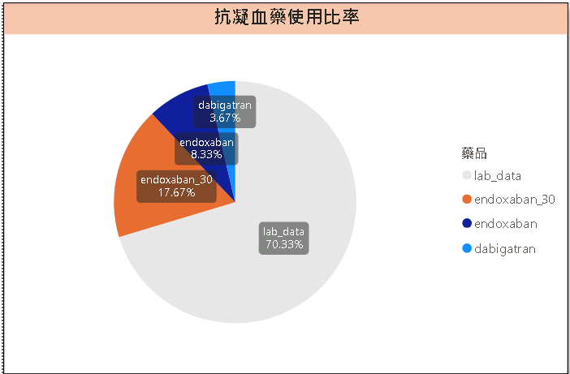

課程介紹
為什麼需要藥品警示系統？
在現代醫療環境中，藥品安全監測是確保病患健康的關鍵環節。然而，隨著藥品種類的增加和病患數量的上升，傳統人工審核方式已難以應對日益複雜的用藥安全挑戰。
本課程將帶領您從零開始，學習如何利用Python程式開發一套自動化藥品警示系統，能夠：
- 自動比對病患用藥與檢驗數據
- 即時識別潛在的藥物風險
- 生成標準化的警示報告
- 提升藥品使用安全性
無論您是醫療資訊人員、臨床藥師，還是對醫療數據分析感興趣的開發者，本課程都能幫助您掌握實用的技能，為醫療安全貢獻力量。

在現代醫療環境中，藥品安全監測是確保病患健康的關鍵環節。然而，隨著藥品種類的增加和病患數量的上升，傳統人工審核方式已難以應對日益複雜的用藥安全挑戰。
本課程將帶領您從零開始，學習如何利用Python程式開發一套自動化藥品警示系統，能夠：
無論您是醫療資訊人員、臨床藥師，還是對醫療數據分析感興趣的開發者，本課程都能幫助您掌握實用的技能，為醫療安全貢獻力量。
系統能夠自動整合多種藥品病患名單與檢驗數據，無需手動操作，大幅提升工作效率。
根據預設的審查規則，自動識別潛在風險，包括肌酸酐異常、INR異常、年齡風險等多項指標。
自動生成格式統一的警示報告，清晰標記異常項目，便於醫療人員快速審核與決策。
藥品警示系統採用模組化設計，從數據讀取、整合、規則應用到報告生成，每個環節都經過精心設計，確保系統運行穩定高效。
讀取藥品病患名單與檢驗數據
數據清洗與格式轉換
合併病患與檢驗資料
應用審查規則檢查異常
產生警示報告
系統內建多種審查規則，可根據不同藥品特性進行客製化設定：
所有規則均可根據臨床需求進行調整，確保系統適應不同醫療機構的實際情況。
系統能夠自動分析不同藥品的使用情況，幫助醫療機構了解藥品使用趨勢。
清晰展示正常與異常案例的分佈情況，幫助醫療人員快速掌握整體風險狀況。
比較不同藥品的異常情況，幫助識別特定藥品可能存在的風險模式。
深入分析各種異常類型的出現頻率，幫助醫療機構針對性地制定風險管理策略。
透過這些視覺化圖表，醫療機構可以直觀地了解藥品使用情況與潛在風險，
從而制定更有效的藥品管理策略，提升用藥安全。
掌握Python數據處理、分析與視覺化技能，能夠獨立開發數據處理應用
深入了解藥品安全監測原則與實踐，提升藥品風險管理能力
培養系統化思考能力，能夠設計與實現完整的解決方案
獲得實際案例經驗，能夠將所學知識應用於真實醫療環境
完成課程並通過專案評估後，將獲得正式結業證書，證明您具備藥品警示系統開發的專業能力。

資深醫療資訊專家
王博士擁有超過15年的醫療資訊系統開發經驗，專長於藥品安全監測系統與醫療數據分析。曾任多家醫學中心資訊部門主管，主導開發多套醫療資訊系統，並在國際醫療資訊會議上發表多篇論文。
醫學資訊學博士
臨床藥學碩士
醫學中心資訊部主管
醫療軟體公司技術總監
醫療資訊系統專業認證
Python數據分析專家認證
《醫療數據分析實戰》
《Python在醫療領域的應用》
醫院臨床藥師
"參加這個課程前，我們藥局每天都要花費大量時間手動檢查藥品與檢驗數據的匹配情況。學習並實施這套系統後，我們將審核時間縮短了80%，同時提高了風險識別的準確率。現在我們能夠將更多時間用於病患諮詢和臨床服務。"

醫院資訊部門主管
"作為醫院資訊部門的負責人，我一直在尋找能夠提升藥品安全管理的解決方案。這個課程不僅教會了我們如何開發警示系統，還幫助我們理解了如何將其整合到現有的醫院資訊系統中。系統上線後，我們的藥品不良反應事件減少了30%。"

醫療軟體開發者
"作為一名醫療軟體開發者，我參加這個課程是為了擴展我的技能組合。課程內容非常實用，從基礎Python知識到實際系統開發，每個環節都講解得很清晰。我特別喜歡課程中的實際案例分析，這讓我更好地理解了醫療環境中的數據處理挑戰。"

地區醫院藥劑部主任
"我們醫院規模不大，但用藥安全同樣重要。這個課程幫助我們建立了一套符合自身需求的警示系統，不需要昂貴的商業軟體。系統實施後，我們能夠更有效地監控高風險藥品，特別是對於腎功能不全的患者，大大提高了用藥安全性。"